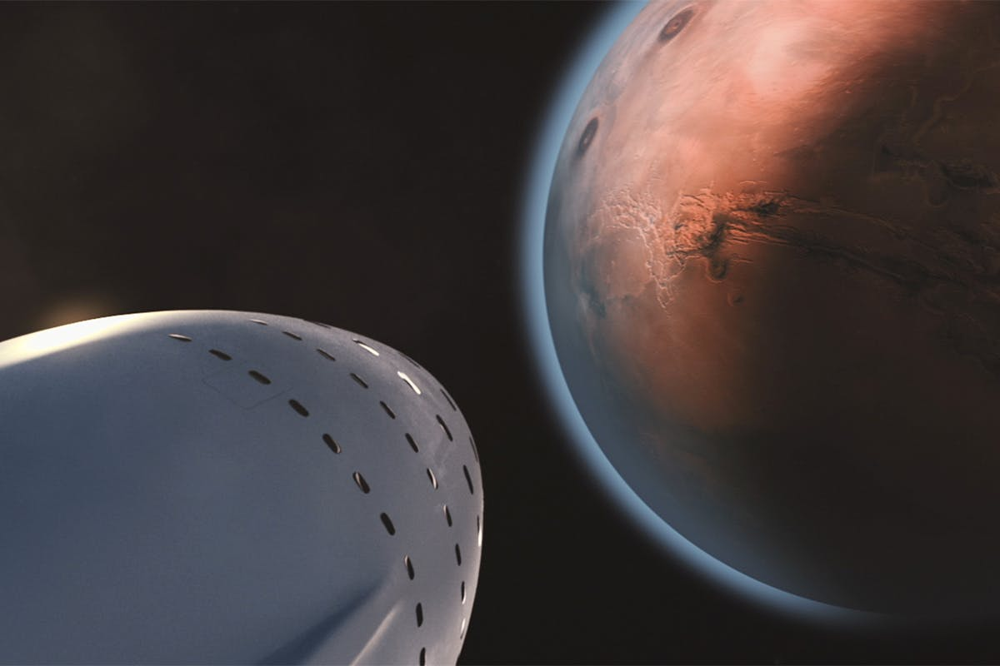

About Mars
Mars is the fourth planet from the Sun. It is often called the Red Planet because its surface contains iron oxide, which gives it a reddish colour.
Mars has mountains, valleys, dust storms, and polar ice caps. Because of these features, scientists believe it may once have had water on its surface.
It is one of the most important planets for space research because it may help us understand whether life could have existed elsewhere in the Solar System.
Interesting Facts About Mars
- Mars is smaller than Earth.
- It has the largest volcano in the Solar System, called Olympus Mons.
- A day on Mars is just a little longer than a day on Earth.
- Scientists continue to send missions there to study its surface.